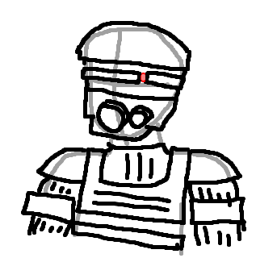

shitarse
A short retelling of a dream I had
There was a flaming hole in the ground, less like a volcano, but more like a sinkhole with a pillar of fire shooting out of it like a jet. The view never changed, it was always centered on the flaming pit. Around the pit were people in dark suits with masks, shoveling anthracite coal into it.When they ran out of coal, they instead started throwing fuel canisters into the pit. When that ran out, they threw in wooden furniture and wagon wheels.
And when there was no more wood left to burn, they instead began to burn the people. Finally, with nothing else left to do, the masked men walked into the fire themselves.  Rough sketch of what these fuckers looked like
You could probably extract some deeper meaning from all this, I don't care enough to do that myself, I just thought it was interesting.